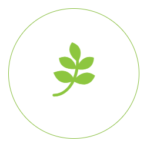

|
|
Главная | Контакты | О нас | Волонтеры |
Стать волонтером
|
Приглашаем Вас в наши дружные ряды!
|
| Форум поможет ответить на все ваши вопросы, вы всегда будете в курсе всех событий из жизни организации.
Это главный инструмент коммуникации волонтеров. |
|  |

|
Как стать волонтером?Прежде всего, необходимо узнать кто такой «волонтер». Это тот кто действует по свободной воле. Сам захотел, и сам выбрал что делать. Ресурс волонтера — его личное время, его личные силы, умения и навыки |
Выбор организацииЕсть формальные признаки: уставные документы, сайт, команда, описание что и где делают, карта и календарь событий (ложится ли он на Ваш рабочий график), внутренние правила, наличие обучения и поддержки, командная работа |

|

|
Волонтер помогает только трудом!Помните! Волонтерство — это вазимный договор. Вазимное решение и признание прав и обязанностей |
Готовся сам задавать вопросыЧто Вам важно знать? Что вы не нашли на сайте? Что вас смутило? Не забудьте спросить кто и с какими полномочиями над Вами старший? Узнайте что делать в случае возникших проблем |
Новости |
Вся информация о социальном волонтерстве в России |